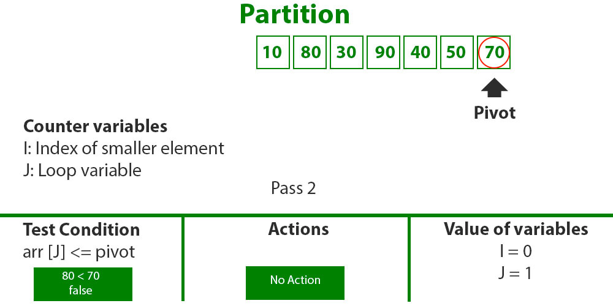
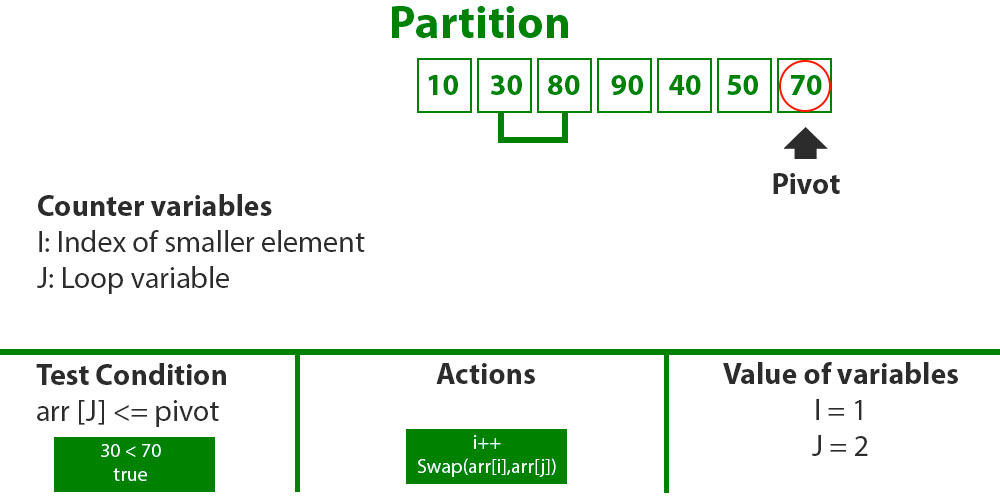
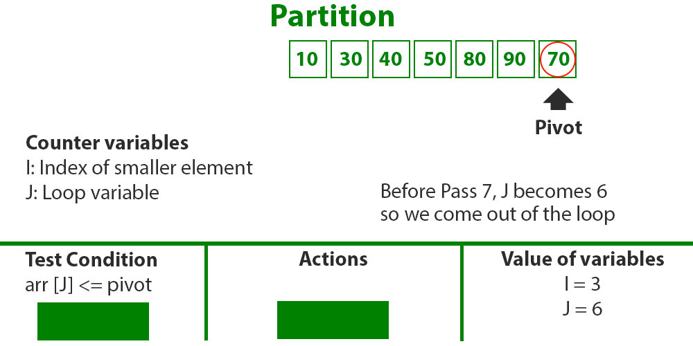
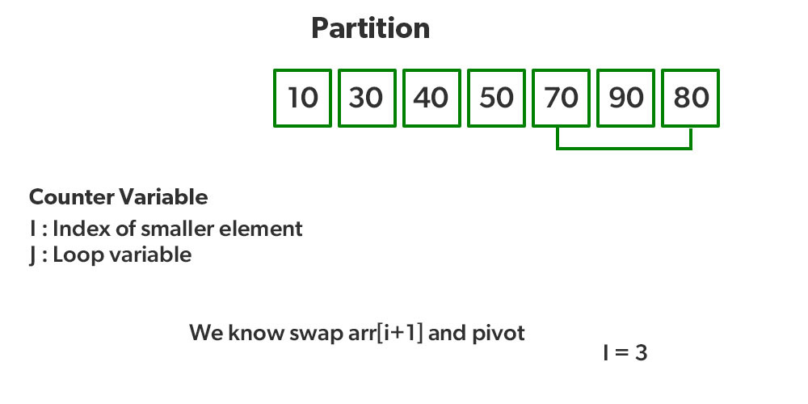
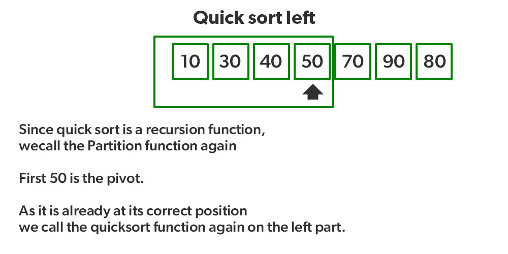
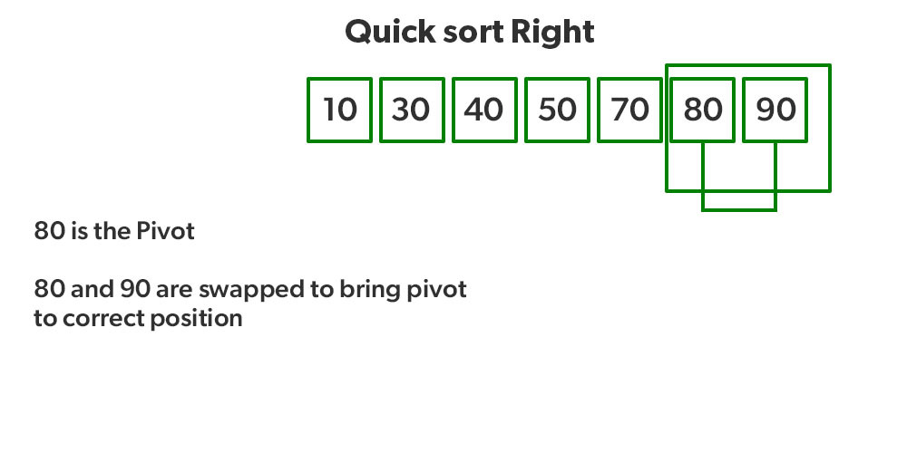

Illustration of partition() :
Consider: arr[] = {10, 80, 30, 90, 40, 50, 70} Indexes: 0 1 2 3 4 5 6 low = 0, high = 6, pivot = arr[h] = 70 Initialize index of smaller element, i = -1

Traverse elements from j = low to high-1 j = 0: Since arr[j] <= pivot, do i++ and swap(arr[i], arr[j]) i=0 arr[]={10, 80, 30, 90, 40, 50, 70} // No change as i and j are same j=1: Since arr[j]> pivot, do nothing
j = 2 : Since arr[j] <= pivot, do i++ and swap(arr[i], arr[j]) i=1 arr[]={10, 30, 80, 90, 40, 50, 70} // We swap 80 and 30
j = 3 : Since arr[j] > pivot, do nothing // No change in i and arr[] j = 4 : Since arr[j] <= pivot, do i++ and swap(arr[i], arr[j]) i=2 arr[]={10, 30, 40, 90, 80, 50, 70} // 80 and 40 Swapped

j = 5 : Since arr[j] <= pivot, do i++ and swap arr[i] with arr[j] i=3 arr[]={10, 30, 40, 50, 80, 90, 70} // 90 and 50 Swapped
We come out of loop because j is now equal to high-1. Finally we place pivot at correct position by swapping arr[i+1] and arr[high] (or pivot) arr[] = {10, 30, 40, 50, 70, 90, 80} // 80 and 70 Swapped
Now 70 is at its correct place. All elements smaller than 70 are before it and all elements greater than 70 are after it. Since quick sort is a recursive function, we call the partition function again at left and right partitions,
Again call function at right part and swap 80 and 90
